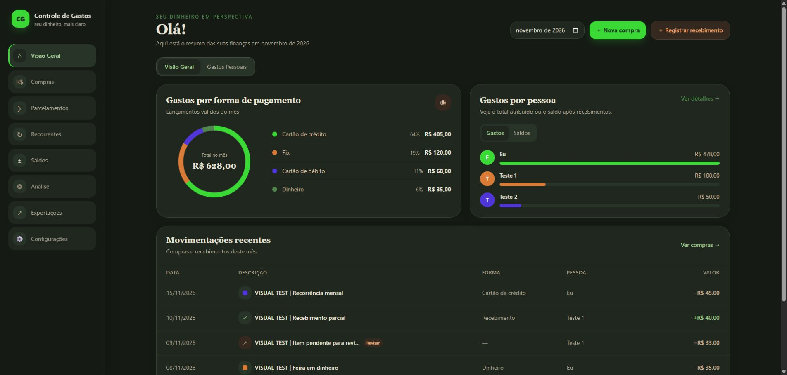

Divida sem confusão
Registre quem pagou, para quem foi a compra e como o valor será dividido.
COMPRA COMPARTILHADA
Eu · Teste 1 · Teste 2
APP DESKTOP PARA A VIDA REAL
Registre despesas, divida compras e acompanhe quem pagou o quê — em um só lugar, no seu computador.
CAPTURA DO APP · DADOS FICTÍCIOS

01 / A IDEIA
Uma compra no cartão, uma conta dividida, um Pix que alguém adiantou. O app reúne os detalhes e ajuda a enxergar o fechamento do mês sem depender de várias planilhas.
02 / O QUE DÁ PARA FAZER
Do primeiro lançamento ao fechamento, acompanhe despesas compartilhadas em um só lugar.
Registre quem pagou, para quem foi a compra e como o valor será dividido.
Acompanhe fechamento, vencimento e o mês em que cada compra entra na fatura.
Veja cobranças repetidas e parcelas futuras, com ajustes por ocorrência.
Associe valores recebidos aos rateios e entenda os saldos entre pessoas.
Revise importações CSV e Excel, consulte análises mensais e exporte dados.
03 / SEUS DADOS
O app usa SQLite local e não cria uma conta online nem sincroniza seus dados. Banco, backups e arquivo .env podem conter informações financeiras: não os envie ao GitHub.
Leia os cuidados completos ↗As rotas não têm autenticação. Não exponha o servidor à rede ou à internet.
SQLite e backups ficam locais; a base não entra no pacote por padrão.
Revise os dados antes de enviá-los ao endpoint configurado.
04 / COMO COMEÇAR
O repositório oferece o código-fonte. Ainda não há instalador pronto para baixar.
Use o Git ou clique em Code → Download ZIP no GitHub e extraia a pasta.
Requisitos: PHP 8.4.27+, Composer 2, Node.js 22+ e pnpm 11. Habilite pdo_sqlite no PHP.
Ver requisitos completos ↗git clone https://github.com/JonFrancis/controle-de-gastos.git
cd controle-de-gastoscomposer install
npm install --global pnpm@11
pnpm install --frozen-lockfileCopy-Item .env.example .env
New-Item -ItemType File database/database.sqlite
php artisan key:generate
php artisan migrate --forcecomposer run native:devA primeira execução pode levar alguns minutos para preparar o Electron.
UM PROJETO EM EVOLUÇÃO